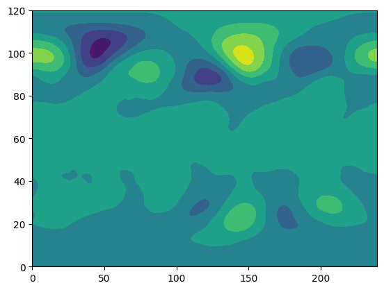
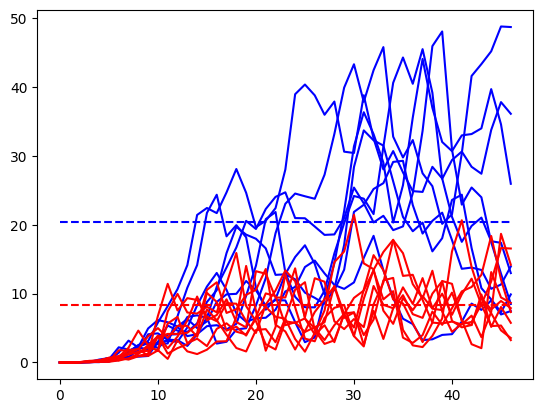
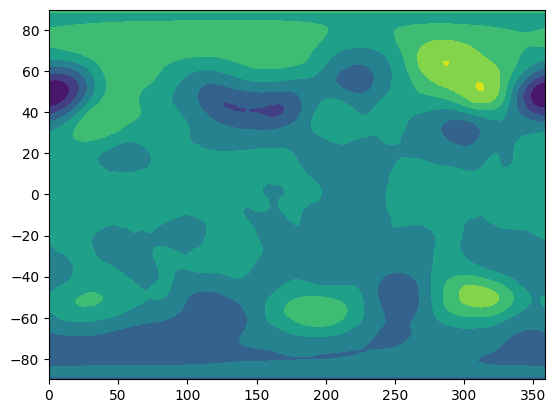

# import sys
# import xarray as xr
# import numpy as np
# import matplotlib.pyplot as plt
# import os
# # download data to Colab
# for ens in np.arange(1,11):
# os.system('wget -O HW5_ens'+str(ens).zfill(2)+'.nc https://zenodo.org/record/7384713/files/HW5_ens'+str(ens).zfill(2)+'.nc?download=1')
import os
import requests
import sys
import xarray as xr
import numpy as np
import matplotlib.pyplot as plt
import os
# Function to download a file using requests
def download_file(url, filename):
response = requests.get(url, stream=True)
if response.status_code == 200:
with open(filename, 'wb') as f:
for chunk in response.iter_content(chunk_size=8192):
f.write(chunk)
else:
print(f"Failed to download {filename}. Status code: {response.status_code}")
# Download data
for ens in range(1, 11):
filename = f'HW5_ens{str(ens).zfill(2)}.nc'
url = f'https://zenodo.org/record/7384713/files/{filename}?download=1'
download_file(url, filename)
---------------------------------------------------------------------------
ModuleNotFoundError Traceback (most recent call last)
Cell In[2], line 4
2 import requests
3 import sys
----> 4 import xarray as xr
5 import numpy as np
6 import matplotlib.pyplot as plt
ModuleNotFoundError: No module named 'xarray'
!pip install netCDF4
Collecting netCDF4
Downloading netCDF4-1.6.5-cp310-cp310-manylinux_2_17_x86_64.manylinux2014_x86_64.whl (5.5 MB)
━━━━━━━━━━━━━━━━━━━━━━━━━━━━━━━━━━━━━━━━ 5.5/5.5 MB 39.7 MB/s eta 0:00:00
?25hCollecting cftime (from netCDF4)
Downloading cftime-1.6.3-cp310-cp310-manylinux_2_17_x86_64.manylinux2014_x86_64.whl (1.3 MB)
━━━━━━━━━━━━━━━━━━━━━━━━━━━━━━━━━━━━━━━━ 1.3/1.3 MB 62.3 MB/s eta 0:00:00
?25hRequirement already satisfied: certifi in /usr/local/lib/python3.10/dist-packages (from netCDF4) (2023.7.22)
Requirement already satisfied: numpy in /usr/local/lib/python3.10/dist-packages (from netCDF4) (1.23.5)
Installing collected packages: cftime, netCDF4
Successfully installed cftime-1.6.3 netCDF4-1.6.5
# the nc file has 4 dimensions: initial time (time), lead time (step), latitude, longitude
# ens01 indicates the first ensemble member and ens02 is the second ensemble member
import netCDF4
gh = np.zeros((10,8,47,121,240)) # number of ensemble, initialization time, forecast lead, lat, lon
for i in range(1,11):
# fp = '/content/HW5_ens'+str(i).zfill(2)+'.nc'
fp = 'HW5_ens'+str(i).zfill(2)+'.nc'
nc = netCDF4.Dataset(fp)
gh[i-1,] = nc['gh'][:]
y = nc['latitude'][:]
x = nc['longitude'][:]
lon,lat = np.meshgrid(x,y)
gh_weighted = gh * np.cos(lat/180*np.pi)**0.5
gh_weighted = np.reshape(gh_weighted,[int(np.size(gh_weighted)/(np.size(y)*np.size(x))),int(np.size(y)*np.size(x))])
import numpy as np
from sklearn.decomposition import PCA
modes = 100
pca = PCA(n_components=modes)
pca.fit(gh_weighted)
PCA(n_components=100)In a Jupyter environment, please rerun this cell to show the HTML representation or trust the notebook.
On GitHub, the HTML representation is unable to render, please try loading this page with nbviewer.org.
PCA(n_components=100)
# dimension reduction
# derive EOF pattern (spatial structure) and principal components (time series)
EOF = np.reshape(pca.components_,[modes,np.size(y),np.size(x)])
pcs = np.dot(gh_weighted,pca.components_.transpose())
pcs_std = np.reshape(np.std(pcs,axis=0),[100,1])
pcs = pcs/np.std(pcs_std,axis=0)
pcs = np.reshape(pcs,[10,8,47,modes])
import xarray as xr
# Create DataArrays
EOF_da = xr.DataArray(EOF, dims=['mode', 'y', 'x'], name='EOF')
pcs_da = xr.DataArray(pcs, dims=['ensemble', 'init', 'lead', 'mode'], name='pcs')
pcs_std_da = xr.DataArray(pcs_std, dims=['mode', '1'], name='pcs_std')
# Create a Dataset to store them together
ds = xr.Dataset({'EOF': EOF_da, 'pcs': pcs_da, 'pcs_std': pcs_std_da})
# Save to a NetCDF file
ds.to_netcdf('dimension_reduction_results.nc')
# To load them later:
# ds_loaded = xr.open_dataset('dimension_reduction_results.nc')
import xarray as xr
# Load the NetCDF file
ds_loaded = xr.open_dataset('dimension_reduction_results.nc')
# Access the DataArrays from the loaded Dataset
EOF_loaded = ds_loaded['EOF']
pcs_loaded = ds_loaded['pcs']
pcs_std_loaded = ds_loaded['pcs_std']
# Print some basic information to verify the data
print(ds_loaded)
# Optionally, inspect a specific DataArray
print(EOF_loaded)
<xarray.Dataset>
Dimensions: (mode: 100, y: 121, x: 240, time: 10, ensemble: 8, index: 47, 1: 1)
Dimensions without coordinates: mode, y, x, time, ensemble, index, 1
Data variables:
EOF (mode, y, x) float64 ...
pcs (time, ensemble, index, mode) float64 ...
pcs_std (mode, 1) float64 ...
<xarray.DataArray 'EOF' (mode: 100, y: 121, x: 240)>
[2904000 values with dtype=float64]
Dimensions without coordinates: mode, y, x
# calculate deviation from ensemble mean
gh_prime = pcs - pcs.mean(axis=0)
# plt.figure()
# plt.contourf(EOF)
plt.figure()
plt.contourf(EOF[4,::-1,:])
# EOF.shape
<matplotlib.contour.QuadContourSet at 0x3d599c430>

modes = 100
var_X1_sum = np.zeros((modes,modes))
count = 0
for cases in range(8):
for i in range(30,47):
X1 = np.reshape(gh_prime[:,cases,i,],[10,modes])
sigma_clim = X1.transpose().dot(X1)
var_X1_sum = (var_X1_sum*count + sigma_clim)/(count+1)
count = count+1
count = 0
var_sum = np.zeros((modes,modes))
for i in range(47):
X2 = np.reshape(gh_prime[:,0,i,],[10,modes])
var_sum = (var_sum*count + var_X1_sum-X2.transpose().dot(X2))/(count+1)
count = count+1
v,w = np.linalg.eig(var_sum.dot(np.linalg.inv(var_X1_sum)))
idx = v.argsort()[::-1]
v = v[idx]
w = w[:,idx]
pcs_tau = np.reshape(gh_prime,[10*8,47,100]).dot(w)
pcs_tau = np.reshape(pcs_tau,[10,8,47,100])
mode1 = 0
mode2 = 50
plt.figure()
plt.plot((pcs_tau.var(axis=0))[:,:,mode1].T,'b')
plt.plot(np.arange(0,47),np.ones([47,1])*(pcs_tau.var(axis=0))[:,46,mode1].mean(axis=0),'b--')
print(np.sum((pcs_tau.var(axis=0))[:,46,mode1].mean(axis=0)-(pcs_tau.var(axis=0))[0,:,mode1]))
plt.plot((pcs_tau.var(axis=0))[:,:,mode2].T,'r')
plt.plot(np.arange(0,47),np.ones([47,1])*(pcs_tau.var(axis=0))[:,46,mode2].mean(axis=0),'r--')
print(np.sum((pcs_tau.var(axis=0))[0,46,mode2]-(pcs_tau.var(axis=0))[0,:,mode2]))
641.2402345596014
77.81993116625918

predictable_component = w[:,0].T.dot(pca.components_)
predictable_component = np.reshape(predictable_component,[np.size(y),np.size(x)])
plt.figure()
plt.contourf(lon,lat,predictable_component)
<matplotlib.contour.QuadContourSet at 0x3d8833f40>
